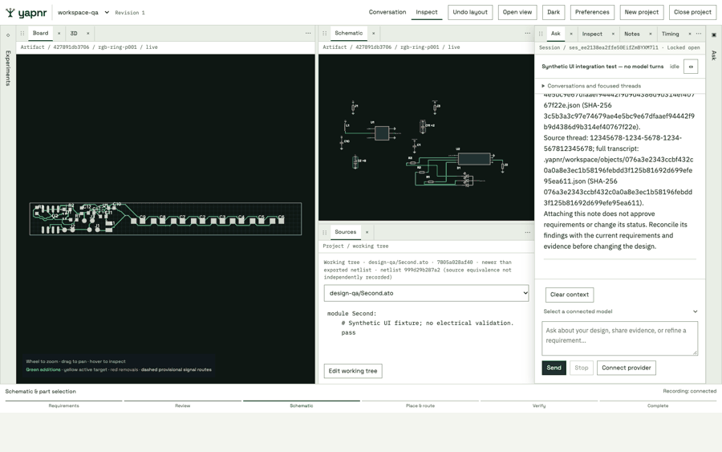
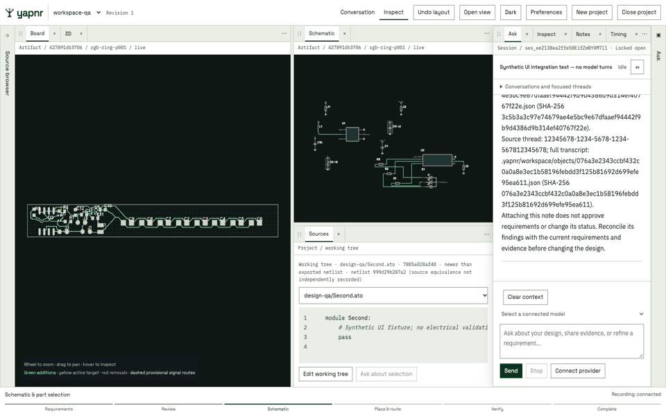
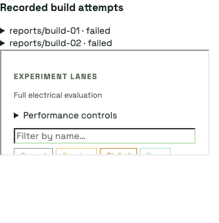
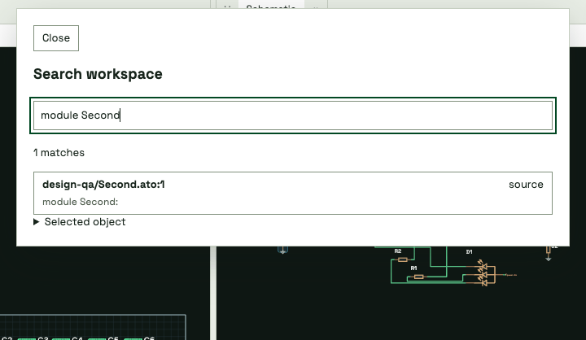

Unified engineering workbench¶
The workbench uses the owner-provided brand kit: one project shell, persistent engineering tabs, two tool drawers, bundled fonts, and shared light/dark tokens. Conversation and Inspect arrange the same Ask session and views. Moving a tab retains its renderer/editor instance; closing a view does not cancel a job.

This capture exercises the packaged UI against a synthetic conversation and source fixture. Board and schematic views show an existing recorded LED-ring experiment. The fixture sources are independent of that experiment; the UI labels their hashes separately. No model turn, acceptance or electrical validation was performed by this walkthrough. Images are UI evidence, not DRC evidence.
Checked behavior includes two source-file tabs, pointer merge across an iframe, Escape rollback, dirty-close Cancel/discard, minimize/original-slot restore, retained Ask draft and renderer load count, unsaved source recovery after reload, unlocked drawer dismissal, Notes, recorded timing and stable historical selection during refresh, light/dark and opaque overlays. Viewports 360, 900, 1360 and 1600 have no page overflow; the 800-pixel layout projection was checked at twice the device scale.
The dock transaction tests cover four split directions, ordered group moves, drawer reorder/migration, last-pane recovery, presets and invalid destinations. Backend tests cover source concurrency, managed-file boundaries, lifecycle idempotence, missing closes, overlapping sessions, late heartbeats and deduplicated parallel tool spans. Native experiment statistics remain a separate Timing view.
Source-to-build equivalence and CPU measurements are unavailable where the workspace did not record them. Linked highlights reject unknown or mismatched artifact hashes. Touch hardware, screen-reader behavior and a sustained 60 fps performance benchmark have not been certified by these checks.
Embedded experiment tree¶

The embedded tree retains the native hierarchy, filters and progress data. Its visibility belongs to the workbench drawer; the standalone viewer’s older panel controller does not close it based on the embedded frame width. Selecting a new lane updates the live Board, Schematic and 3D views, while pinned comparisons stay independent. The capture uses the synthetic workspace and its existing recorded LED-ring lane, without a model turn or an electrical validation claim.
Recorded build attempts¶

The Experiments tab also lists archived Atopile build results, including failures that occurred before a placement-and-routing lane existed. Expanding an attempt shows its recorded duration and catalog-candidate count; its result opens as a read-only source tab. This capture uses two existing failed build reports, without running a model turn or claiming a completed PCB.
Restored active experiment views mount when project data arrives, and opening a drawer activates its selected view. A first-open browser regression starts with Experiments selected in a closed drawer and never switches tabs to initialize it. Embedded mode and theme are applied by an early parser script, before native renderer scripts load; changing theme preserves existing frame instances.
Floating workspace search and performance settings¶

Cmd-F or Ctrl-F opens workspace search, including from embedded renderer frames. Reopening retains the query; repeating the shortcut while open clears it. Matching source lines open their files, and components/nets reveal through the existing artifact-hash checks. Selected-object metadata, pin tables and vendor/datasheet links remain available in the dialog. Inspect is removed from saved tab layouts. The capture combines synthetic source text with an existing recorded component, without asserting source-to-board equivalence or electrical validation.
Performance has its own tab. Native routing controls retain their existing safe boundary/restart choices. Google Cloud Batch settings use the engine’s validated configuration and save to the project, with optimistic concurrency. SDK profiles and authentication status are read from the UI host; credentials and credential lookup commands are not copied into workspace artifacts. The execution environment must have the corresponding SDK credentials. Saving settings launches no jobs.